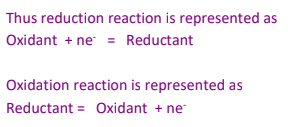
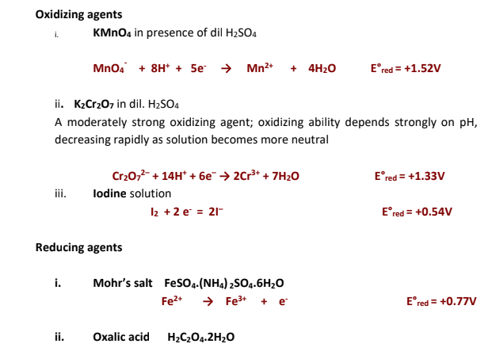
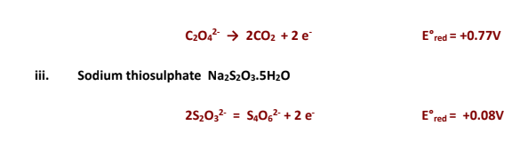
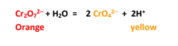
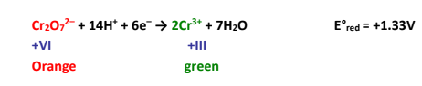

To estimate the strength of given Mohr's salt solution by titrating against Potassium dichromate solution. Standardize the Potassium dichromate solution with (approx. 0.025N) standard Mohr's salt solution prepared by you.
All glassware and plastic ware used should be sterilized:
Redox stands for Reduction - Oxidation
Redox titrations involve the titration of an oxidizing agent (or oxidant) with a
reducing agent (or reductant) or vice versa. There must be a sufficiently large
difference between the oxidizing and reducing capabilities of theses agents for the
reaction to undergo completion with a sharp end point.
Oxidation process involves loss of electrons while reduction process involves gain
of electrons.
Thus an oxidizing agent is one which accepts electrons while a reducing agent is
one which loses the electrons.
An oxidizing agent oxidizes the other substance by stripping off electrons from it.
A reducing agent reduces the other substance by donating electrons to it.
Oxidation and reduction reactions always occur simultaneously. One can not take
place in isolation from the other. During a redox reaction the oxidizing agent itself
undergoes reduction while the reducing agent undergoes its oxidation.



It is important to note that for many oxidants the pH of the medium is of great importance and hence their oxidizing strength may vary depending on the medium in which its reaction is studied. For example potassium permanganate is oxidizing agent in all three mediums, acid, alkaline and neutral. However it is strongest in acidic medium.
A redox indicator should be capable of producing a sudden potential change
in the vicinity of the equivalence point during a redox titration. For this the the
indicator itself should be redox active i.e., capable of undergoing a reversible
oxidation or reduction process. The oxidized and reduced form of the indicator
should have a contrast difference in the colours.
lnoxd + ne = lnred
At potential E, the ratio of the concentration of oxidized and reduced forms is given
by the Nernst equation
E= E0 + RT/nF ln [lnoxd]/[lnred]
Potassium dichromate is also a very strong oxidizing agent
(E0red=+1.33V)However it is not as strong oxidizing agent as permanganate is
(E0red=+1.51V).Still it is widely used in redox titrations because of several advantages over permanganate. Unlike potassium permanganate, potassium dichromate is available in high purity and is highly stable up to its melting point. Its aqueous solutions are not attacked by oxidisable impurities like rubber or any other organic matter and thus composition of aqueous solution does not change on keeping. The aqueous solutions are quite stable towards light. It is thus an excellent primary standard and its standard solutions can be prepared by direct weighing of an amount of it and dissolving in a known volume of distilled water.
The neutral aqueous solution of Potassium dichromate is 1:1 equilibrium
mixture of
dichromate and chromate, a consequence of hydrolysis of dichromate ions.

Chromate ions are weaker oxidizing agent than dichromate. Thus oxidizing strength
of dichromate is reduced in neutral solution. The above hydrolysis reaction however
can be reversed by adding acid to the solution and this explains the necessity of
acidic medium for the reaction.
Also the reduction reaction of dichromate can be represented as:

This reaction clearly shows the involvement of
H+ in the reduction half reaction.
The reducing agent used in this titration is Mohr's salt which is a double salt. Its composition is
FeSO4.(NH4)2SO4.6H2O.The redox active species in this compound is Fe2+ whose oxidation can be represented as:
Take a clean dry weighing bottle. Weigh it when empty without the bottle lid. (as demonstrated in lab session) This is weight of empty weighing bottle (w1). Now put an approximate quantity of Mohr's salt to be weighed in the weighing bottle. Weigh again. In case the added amount is too much than required , take out some with the help of a clean spatula and weigh the weighing bottle. In case the added amount is less than required, add some more into the weighing bottle. (Never add compound to the weighing bottle, when it is still placed on the pan of the weighing balance. Always take it out, and then add or remove the compound). Note down the weighing readings as weight of weighing bottle with the compound (w2) Transfer the compound into 100 mL measuring flask with the help of a funnel and keep the weighing bottle back on the pan of weighing balance. Note down the weight as weight of weighing bottle after transference of compound (w3). The difference of (w3) and (w2) gives the amount of compound actually transferred to the measuring flask. Dissolve the solid in minimum amount of water. Add a few drops of conc. H2SO4 acid. Shake and make up the volume till the 100 ml mark on the flask. Put the stopper on the flask and shake a number of times, vigorously to homogenize the solution
Using Internal Indicator Diphenylamine
Using External Indicator Potassium Ferricyanide
Repeat the above titration, now taking Mohr's salt solution (whose concentration is to be determined) in place of standard Mohr's salt solution.
Click here to perform the simulation
The strength of given Mohr's salt solution was found to be....................g/L